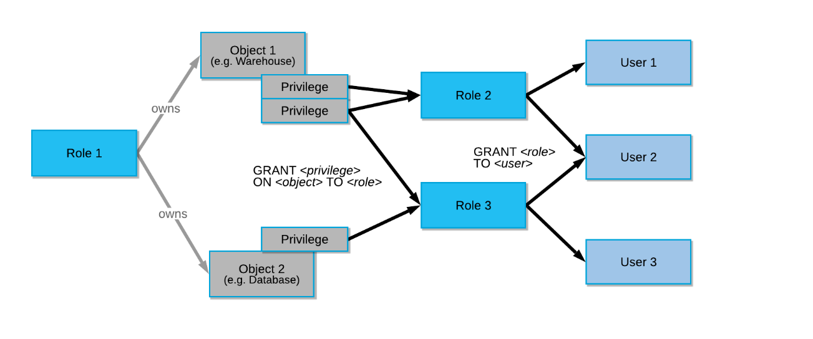
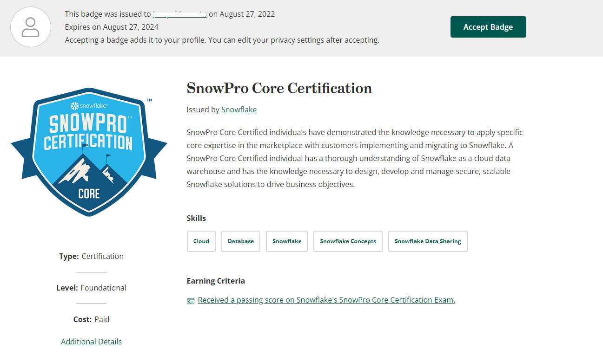

SnowPro Core 認定は対策本や対策サイトみたいなものはないのでここは基本通り試験ガイドに沿ってのマニュアルやネット情報の参照、検証作業で行くしかないと踏んだのでメモします。
SnowPro Core 認定試験ガイド
- Snowflake 認定資格 | Snowflake 【スノーフレイク】 https://www.snowflake.com/certifications/?lang=ja
1.0 分野：アカウントとセキュリティ
1.1 Snowflakeアカウントを管理する方法について説明する。
-
アカウント使用状況
-
情報スキーマ
- INFORMATION_SCHEMA
- アカウントで作成されたオブジェクトに関する広範なメタデータ情報を提供するシステム定義のビューとテーブル関数のセットで構成
- Snowflake Information Schema — Snowflake Documentation
- INFORMATION_SCHEMA
1.2 セキュリティの原則の概要を説明する。
-
多要素認証（MFA）
- Duo MobileでMFA設定する
- コンソール、SnowSQL （CLI クライアント）、JDBCドライバなどで認証が必要となる
- 多要素認証（MFA） — Snowflake Documentation
- Duo MobileでMFA設定する
-
データ暗号化
-
エンドツーエンド暗号化
- AES256暗号化
- エンドツーエンド暗号化（E2EE）は、データを保護する方法であり、保存データまたはSnowflakeとの間で転送中のデータを暗号化する
- AES256暗号化
-
CloudHSMを使った階層型キーモデル
-
自動ローテーション
- Snowflakeが管理するキーすべては、30日以上経過するとSnowflakeによって自動的にローテーションされる。
-
Tri-Secret Secure
- Snowflakeアカウントをホストするクラウドプロバイダープラットフォームで、Snowflakeが管理するキーと顧客が管理するキーを組み合わせて、Snowflakeデータを保護するための複合マスターキーを作成する機能
- 利用のためにはサポートへの連絡が必要
- Business Criticalエディション以上
-
-
ネットワークセキュリティとポリシー
- 継続的なデータ保護
- 継続的なデータ保護 — Snowflake Documentation
- ネットワークポリシー
- アクセスを許可または制限するためのネットワークポリシー
- IP許可、制限リスト
- ネットワークポリシー
- 継続的なデータ保護 — Snowflake Documentation
- 継続的なデータ保護
-
アクセス制御
-
Snowflakeのアクセス制御 — Snowflake Documentation
-
任意アクセス制御（DAC）： 各オブジェクトに所有者がおり、所有者はそのオブジェクトへのアクセスを許可できます。
-
ロールベースのアクセス制御（RBAC）： アクセス権限がロールに割り当てられ、ロールはユーザーに割り当てられます。
-

-
システム定義のロール
-
ロール名 役割 説明 SYSADMIN アカウントでウェアハウスとデータベース（およびその他のオブジェクト）を作成する権限を持つロール ORGADMIN 組織レベルで運用を管理するロール ・組織内に アカウントを作成 できます。 ・組織内のすべてのアカウント（SHOW ORGANIZATION ACCOUNTS を使用）と、組織で有効になっているすべてのリージョン（SHOW REGIONS を使用）を表示できます。 ・組織全体の 使用情報 を表示できます。 ACCOUNTADMIN SYSADMIN および SECURITYADMIN システム定義のロールをカプセル化するロール システムの最上位のロールであり、アカウント内の限られた/制御された数のユーザーにのみ付与する必要がある ・アカウントでウェアハウスとデータベース（およびその他のオブジェクト）を作成する権限を持つロール ・オブジェクトの付与をグローバルに管理し、ユーザーとロールを作成、モニター、管理できるロール SECURITYADMIN オブジェクトの付与をグローバルに管理し、ユーザーとロールを作成、モニター、管理できるロール ・MANAGE GRANTS セキュリティ権限が付与されており、付与の取り消しを含め、あらゆる付与を変更できます。 ・システムロール階層を介して USERADMIN ロールの権限を継承します（つまり、 USERADMIN ロールを SECURITYADMIN に付与）。 USERADMIN ユーザーとロールの管理のみに専用のロール ・CREATE USERおよびCREATE ROLEのセキュリティ権限が付与されています。 ・アカウントにユーザーとロールを作成できます。 PUBLIC アカウント内のすべてのユーザーおよびすべてのロールに自動的に付与される疑似ロール 通常、このロールは、明示的なアクセス制御が不要で、すべてのユーザーがアクセスに関して平等であると見なされる場合に使用されます。
-
-
-
-
フェデレーション認証
-
シングルサインオン（SSO）
1.3 Snowflakeで使用されるエンティティとロールを定義する。
-
権限を付与および取り消す方法の概要を説明する
CREATE ROLE test_role; GRANT USAGE ON DATABASE citibike TO ROLE test_role; GRANT USAGE ON DATABASE weather TO ROLE test_role; revoke role aaaa from role vvvv;ロールの階層と権限の継承について説明する
- ロール
- アクセス制御の概要 — Snowflake Documentation
- 上のアクセス制御と同じなはず
- ロール
1.4 Snowflakeの各エディションに関連するセキュリティ機能について説明する。
-
データマスキング
- ダイナミックデータマスキング
- Snowflakeのマスキング機能を試してみた
- Snowflakeが提供するガバナンス機能のまとめ | DevelopersIO
- 列レベルのセキュリティについて — Snowflake Documentation1.5 Snowflakeのデータガバナンス機能の概要を説明する
- ダイナミックデータマスキング
-
データマスキング
- 上記と同様
-
アカウント使用状況ビュー
-
外部トークン化
- カラム（列）ベースのセキュリティ機能で、対象カラムの値をtokenizationする
- Third-party製品の関数が必要
- 外部トークン化 — Snowflake Documentation
- カラム（列）ベースのセキュリティ機能で、対象カラムの値をtokenizationする
2.0 分野：仮想ウェアハウス
2.1 コンピューティングの原則の概要を説明する。
-
クレジット使用状況と請求
-
同時実行
- ウェアハウスの概要 — Snowflake Documentation
- 各クエリのサイズと複雑さによって決定する
- クエリを処理するのに十分なリソースがウェアハウスにない場合、クエリはキューに入れられ、保留中のリソースは実行中の他のクエリが完b了すると利用可能になる
- 同時実行を上げるためにはマルチクラスタ化する（Enterprise Edition以上が必要）
- クエリを処理するのに十分なリソースがウェアハウスにない場合、クエリはキューに入れられ、保留中のリソースは実行中の他のクエリが完b了すると利用可能になる
-
キャッシング
-
# キャッシュ名 キャッシュ対象 使用可能なユーザー 保存レイヤー 有効期間 1 結果キャッシュ クエリの結果 クエリが実行された同じロールのすべてのユーザー Snowflake 24時間 2 メタデータキャッシュ テーブルに関する情報 すべてのユーザー Snowflake 常に 3 データキャッシュ クエリ結果のファイルヘッダとカラムデータ 同じ仮想ウェアハウスを実行したユーザー ウェアハウス（SSD） ウェアハウスの稼働中 注意事項
結果キャッシュ
https://docs.snowflake.com/ja/user-guide/querying-persisted-results.html#retrieval-optimization
通常、次の条件の すべて が満たされる場合、クエリ結果が再利用されます。
- 新しいクエリは、以前に実行したクエリと構文的に一致する。
- クエリには、実行時に評価する必要のある関数が含まれていない（例: CURRENT_TIMESTAMP() および UUID_STRING()）。 CURRENT_DATE() 関数はこのルールの例外です。CURRENT_DATE() は実行時に評価されますが、 CURRENT_DATE() を使用するクエリは、クエリ再利用機能を引き続き使用できます。
- クエリには、 ユーザー定義関数（UDFs） または 外部関数 が含まれていない。
- クエリ結果に寄与するテーブルデータが変更されていない。
- 以前のクエリの永続化された結果が引き続き利用可能である。
- キャッシュされた結果にアクセスするロールには、必要な権限がある。
- クエリが SELECT クエリの場合、クエリを実行するロールには、キャッシュされたクエリで使用されるすべてのテーブルに必要なアクセス権限が必要です。
- クエリが SHOW クエリの場合、クエリを実行するロールは、キャッシュされた結果を生成したロールと一致する必要があります。
- 結果の生成方法に影響する構成オプションが変更されていない。
- テーブル内にある他のデータ変更によって、テーブルのマイクロパーティションが変更されていない（例: 再クラスタ化または統合化）。
これらの条件をすべて満たしても、Snowflakeがクエリ結果を再利用することは 保証されません。
-
2.2 仮想ウェアハウスのベストプラクティスを説明する。
-
スケールアップとスケールアウト
- タイプの変更とマルチクラスタ
-
仮想ウェアハウスのタイプ
- Tシャツサイズと同じ
-
管理/監視
3.0 分野：データ移動
3.1 データのロードに使用されるさまざまなコマンドと、それらをいつ使用する必要があるかについての概要を説明する。
-
COPY
- COPY INTO <テーブル> — Snowflake Documentation
- 一括データロード時
- COPY INTO xxxx ～～
-
INSERT
- ？？？
- INSERT INTO xxxx SELECT ～～？
- ？？？
-
PUT
-
GET
- PUTとGETは内部ステージとデータのやり取りをする際に使用
-
VALIDATE
-
COPY INTO <テーブル> コマンドの過去の実行でロードされたファイルを検証し、最初のエラーだけでなくロード中に発生したすべてのエラーを返す関数
-
select * from table(validate(t1, job_id => '_last'));
3.2 連続データロード方法と比較してバルクを定義する。
- COPY
- 一括データロード時
- COPY INTO xxxx ～～
- 一括データロード時
- Snowpipe
3.3 データをロードするときに考慮すべきベストプラクティスを定義する。
- ファイルサイズ
- フォルダー
3.4 Snowflakeからローカルストレージまたはクラウドストレージの場所にデータをアンロードする方法の概要を説明する。
- Snowflakeからデータをアンロードする際にサポートされているファイル形式を定義する
-
データのアンロードの準備 — Snowflake Documentation
- JSON、Parquet
- 区切り（CSV、TSV など）
- 常に UTF-8を使用してエンコード
-
データをアンロードするときに考慮すべきベストプラクティスを定義する
-
3.5 半構造化データの操作方法とロード方法を説明する。
-
サポートされているファイル形式
- JSON、Avro、 ORC、Parquet、XML
- 半構造化データの概要 — Snowflake Documentation
-
VARIANT列
-
ネストされた構造のフラット化
-
select value:name::string as "Customer Name", value:address::string as "Address" from car_sales , lateral flatten(input => src:customer);select src:customer[0].name, src:vehicle[0].price from car_sales order by 1;
-
4.0 分野：パフォーマンス管理
4.1 ストレージでのSnowflakeパフォーマンス管理のベストプラクティスの概要を説明する。
-
クラスタリング
- クラスタリングキーとクラスタ化されたテーブル — Snowflake Documentation
- Snowflake側でもクラスタリングすることができるが、ユーザ側でも特定のキーをクラスタリングキーと指定することでクラスタリングが可能。
- すべてのテーブルで推奨されるものではない。追加のコストが必要となる。
- コストに関係なく、可能な限り最速の応答時間が必要。
- クエリパフォーマンスの向上により、テーブルのクラスター化と維持に必要なクレジットが相殺される。
-
マテリアライズドビュー
- 結果の自動メンテナンスによる マテリアライズドビュー
- Enterprise Edition以上の機能
-
検索最適化
-
Enterprise Edition以上の機能
-
大きなテーブルにおける選択的な検索クエリのパフォーマンスを向上させる機能
- テーブルサイズが 100GB 以上ある
- 非クラスター化テーブルである
- メインクラスターキー以外の列で頻繁に検索される
- 数十秒実行されるクエリを実行する
- クエリフィルターでアクセスされる列の少なくとも1つに、10万〜20万以上の個別の値がある
- 等価述語
<列名> = <定数>やINを使用する述語を利用している
-
Snowflakeの検索最適化サービス(Search Optimization Service)を試してみた | DevelopersIO
-
4.2 仮想ウェアハウスでのSnowflakeパフォーマンス管理のベストプラクティスの概要を説明する。
-
クエリのパフォーマンスと分析
-
クエリプロファイル
-
クエリ履歴
-
履歴ページを使用してクエリを監視 — Snowflake Documentation
- コンソール上からは過去14日間に実行されたすべてのクエリの詳細を表示して詳細を確認
-
QUERY_HISTORY ビュー — Snowflake Documentation
- 過去365日間（1年間）以内のさまざまなディメンション（時間範囲、セッション、ユーザー、ウェアハウスなど）によりSnowflakeクエリ履歴をクエリできます。
-
-
SQLの最適化
-
キャッシング
-
メタデータキャッシュ
-
クエリ結果キャッシュ
-
24時間保存。データが変更されていない限り有効
-
クエリ結果キャッシュの無効化
-
ALTER SESSION SET USE_CACHED_RESULT = FALSE;
-
-
-

5.0 分野：Snowflakeの概要とアーキテクチャ
5.1 Snowflakeのクラウドデータプラットフォームの主要コンポーネントの概要を説明する。
- データ型
- オプティマイザー
- 継続的なデータ保護
- クローニング
- キャッシングのタイプ
- ウェブインターフェイス（UI）
- データクラウド/データ共有/ Data Marketplace/Data Exchange
5.2 Snowflakeデータ共有機能の概要を説明する。
- アカウントタイプ
- Data MarketplaceとData Exchange
- アクセス制御オプション
- 共有
5.3 Snowflakeが従来のウェアハウスソリューションとどのように異なるかを説明する。
- エラスティックストレージ
- エラスティックコンピューティング
- アカウント管理
5.4 利用可能なさまざまなエディションと、各エディションに関連する機能の概要を説明する。
5.5 Snowflakeのパートナーエコシステムを特定する
- クラウドパートナー
- コネクタ
5.6 Snowflakeの3つの異なるレイヤーの目的の概要を説明し、定義する。
- ストレージレイヤー
- コンピューティングレイヤー
- クラウドサービスレイヤー
5.7 Snowflakeのカタログとオブジェクトの概要を説明する。
- データベース
- スキーマ
- テーブルタイプ
- ビュータイプ
- データ型
- 外部関数
6.0 分野：ストレージと保護
6.1 Snowflakeストレージの概念の概要を説明する。
- マイクロパーティション
- メタデータ型
- クラスタリング
- データストレージ
- ステージタイプ
- ファイル形式
- ストレージモニタリング
6.2 Snowflakeによる継続的なデータ保護の概要を説明する。
-
Time Travel
-
Fail Safe
-
データ暗号化
-
クローニング
追記
（8/27 追記）なんとか合格できました。
